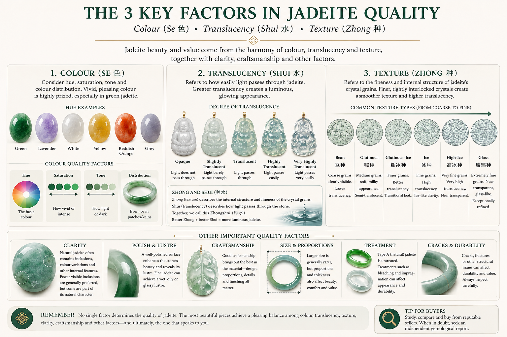
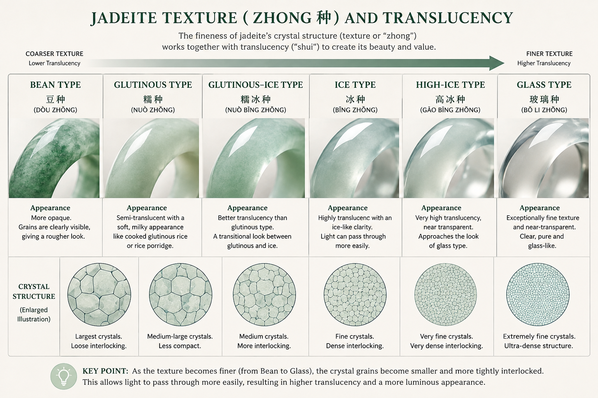

Jadeite is one of the world's most fascinating gemstones. Its beauty comes not from a single characteristic, but from the way colour, texture, translucency, clarity and craftsmanship come together.
In the Chinese-speaking jade market, you may also encounter terms such as 种 (zhǒng, "zhong"), 水 (shuǐ, "shui"), and 色 (sè, "se"). These traditional terms can be useful when learning about jadeite, but they do not represent a single standardized grading system. Understanding them can help you look beyond colour alone and appreciate what makes one piece of jadeite different from another.

Colour
Colour is often the first thing people notice when looking at jadeite, and it can have a major influence on its desirability and value.
Jadeite occurs in many colours, including green, lavender, white and near-colourless, yellow, orange and reddish-orange, black and grey.
For green jadeite, colour is commonly considered in terms of hue (the basic colour), saturation (how vivid or intense the colour is), and tone (how light or dark the colour appears). Colour distribution matters too — colour may be evenly distributed or appear in patches, veins and streaks. Evenly distributed colour is often prized, but distinctive natural patterns can also contribute to a piece's character.
Among green jadeites, a vivid, attractive green with strong saturation and a pleasing tone is particularly prized. But colour should never be considered in isolation — a beautifully coloured jadeite may have relatively low translucency, while a highly translucent piece may have only a delicate colour.
Texture — Zhong (种)
种 (zhǒng), commonly referred to as "texture," is one of the most important traditional jadeite concepts.
Zhong describes the fineness and internal structure of jadeite — the size, arrangement and compactness of its crystal grains. Jadeite is made up of interlocking mineral crystals; when the crystals are very fine and closely interlocked, the material tends toward a smoother, more refined appearance, while coarser structures can look grainier or less even.
In the trade, different forms of zhong are commonly named Bean, Glutinous, Ice and Glass — with two useful transitional terms, Glutinous-Ice and High-Ice, sitting between them.
A relatively coarse crystalline texture. Individual grains may be readily discernible, giving the material a grainier appearance, and it is commonly less translucent than finer-textured jadeite. "Bean" does not mean poor quality — it simply describes a particular type of material.
A finer texture than Bean Type, often with a soft, creamy or hazy appearance — the name comes from its resemblance to glutinous rice or rice porridge. Generally more translucent than coarse Bean Type material, though the degree can vary. You may also see Fine Glutinous (细糯种) and Glutinous-Transitional (糯化种) used for finer material within this category.
A transitional trade term for jadeite that lies visually between Glutinous and Ice Type — generally combining a relatively fine texture with noticeably greater translucency. The boundaries between these terms aren't standardized, so different sellers may classify transitional material somewhat differently.
A fine texture and relatively high translucency, producing an appearance reminiscent of clear ice — luminous and clean, particularly in good lighting. Fine Ice Type jadeite may let light penetrate deeply while retaining a soft, rather than fully glass-like, appearance.
A common commercial term for jadeite considered more translucent and refined than ordinary Ice Type, generally used for material that approaches Glass Type without quite reaching it. Like the other zhong terms, it is a trade term rather than a universally standardized gemological grade.
Exceptionally fine texture and very high transparency or translucency, giving a clear, glass-like appearance — the finest examples can appear almost transparent. Glass Type is often associated with high value, but it does not automatically mean a piece is more valuable than every other type. Colour, clarity, size and craftsmanship all weigh in.

Translucency — Shui (水)
Translucency describes how readily light passes through jadeite.
Jadeite can range from relatively opaque to highly translucent. Highly translucent jadeite can appear luminous, with light seeming to come from within the stone. In Chinese jade terminology, 水 (shuǐ) and 水头 (shuǐtóu) are commonly associated with a stone's transparency. Although shui literally means "water," it does not refer to actual water inside the jadeite — it is a traditional way of describing the visual quality and depth of light transmission.
Zhong (texture) describes the internal structure and fineness of the crystal grains. Shui (translucency) describes how light passes through the stone. Together, we call this zhongshui — and a jadeite's texture and translucency should still be considered separately when making a careful assessment, since the two are related but not identical.
Clarity and Internal Characteristics
Natural jadeite commonly contains internal features — mineral inclusions, colour variations, fractures and other structural characteristics. Not every internal feature is a defect; some are part of the natural character of the material. However, significant cracks, fractures and other structural weaknesses can affect durability, appearance and value. Clarity should be considered together with texture and translucency rather than evaluated on its own.
Polish and Surface Lustre
The quality of a jadeite's polish can significantly affect its appearance. Fine-textured jadeite can often produce a smooth, even surface with a beautiful lustre — a well-polished surface enhances the way light interacts with the stone and can make its colour and translucency appear more vivid. Jadeite may display a range of surface appearances, from a soft, waxy or oily lustre to a brighter, glassier appearance, depending on its texture, translucency and polish.
Craftsmanship and Design
For carved jadeite, the quality of the material is only part of the story — craftsmanship can dramatically affect the beauty and value of a finished piece. A skilled carver considers the natural colour distribution, shape and inclusions of the rough material and incorporates them into the design. In a carved pendant, for example, an area of particularly attractive green may be deliberately positioned to form the most important part of the design, and natural variations that might otherwise be considered imperfections can become an integral part of the carving. Proportion, symmetry, polish, detail and overall design should all be weighed when evaluating a finished piece.
Treatment
Type A jadeite generally refers to jadeite that has not undergone the bleaching and polymer impregnation associated with B-jade treatment. Other treatments may alter the colour, transparency or durability of jadeite. When purchasing a valuable piece, it is important to understand whether the material has been treated and, where appropriate, to obtain an independent gemological report. "Natural" and "Type A" are often used together in the jade trade — but treatment terminology should not be confused with zhong. Type A is a treatment designation; it is not a jadeite texture or quality grade.
"There is no single characteristic that makes a piece of jadeite beautiful. The most compelling pieces are those in which the material, colour, translucency and craftsmanship come together harmoniously."
How These Factors Work Together
Jadeite quality cannot be determined by a single characteristic. Consider two pieces of green jadeite:
- Piece A — strong, vivid green; low translucency; coarser texture.
- Piece B — pale green; very high translucency; extremely fine texture.
Neither is automatically "better." They offer different qualities and appeal to different preferences — colour may dominate the beauty of one piece, while translucency and texture define another. This is why experienced jadeite buyers consider the stone as a whole, rather than relying on a single label such as "Ice" or "Glass."
Is There a Jadeite Grading Scale?
It's important to understand that terms such as Bean, Glutinous, Ice and Glass are not equivalent to a universally standardized grading scale. They are traditional and commercial terms used to describe jadeite's texture and translucency, and the exact boundaries between categories can vary among sellers, collectors and markets. Likewise, a higher zhong does not automatically guarantee higher overall value. A jadeite's desirability can depend on:
- Colour, texture and translucency
- Clarity, size, and shape and proportions
- Craftsmanship and presence of cracks or fractures
- Treatment status and overall aesthetic appeal
Appreciating Jadeite Beyond Perfection
One of the pleasures of jadeite is that every natural stone is different. Colour variations, inclusions, subtle textures and natural patterns are part of what makes each piece unique. Rather than looking for a stone that is completely uniform, many collectors appreciate the individual character created by nature. Understanding colour, texture, translucency and the traditional concepts of zhong and shui gives you a better vocabulary for appreciating these differences — and, ultimately, for finding the piece that speaks to you.
See These Qualities in Person
Every piece at Jade You is independently certified natural Type A jadeite. Our Atelier team is glad to walk you through a piece's zhong, shui and colour by private appointment.
Request a Private Viewing